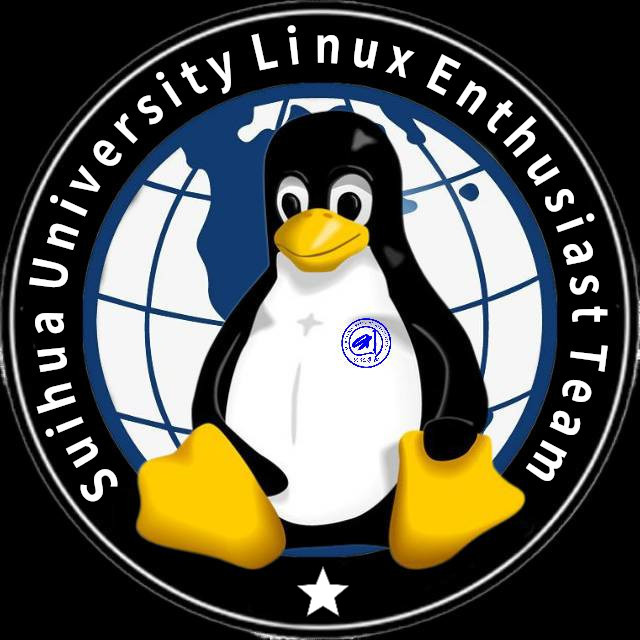

Suihua University Linux Enthusiast Team
绥院Linux爱好者团队，英文名称“Suihua University Linux Enthusiast Team”，缩写“SULET”，由本校Linux爱好者于2022年12月策划并组建。 团队秉持开源互助共享的原则，在这里可以学习和交流Linux技术。遇到问题，可以和志同道合的同学交流，大家都会耐心解答。 团队旨在提供一个良好的Linux学习与交流的环境，促进共同发展。 当然，更重要的是在这里可以结识到志同道合的好友！